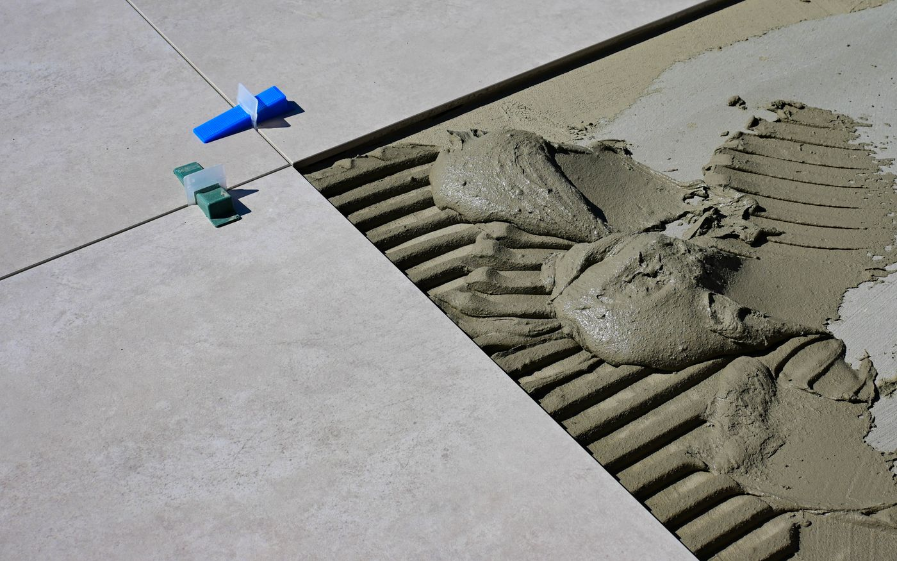

Tuilage, lames qui claquent, joints qui s'ouvrent, points durs sous le pied : la plupart des désordres constatés après une pose viennent du support, rarement du parquet lui-même. La préparation demande du temps, mais elle est mesurable, donc vérifiable.
Le diagnostic en quatre mesures
| Contrôle | Méthode | Seuil courant |
|---|---|---|
| Planéité | Règle de 2 m et cales | ≤ 5 mm (collée) / ≤ 3 mm (flottante) |
| Humidité | Bombe à carbure | ≤ 3 % pour une chape ciment |
| Cohésion | Rayure et test d’adhérence | Surface non farinante, non friable |
| Propreté | Aspiration et inspection | Sans laitance, colle, plâtre ni graisse |
Corriger la planéité
Trois cas de figure, trois réponses :
- Défauts localisés : rebouchage à l'enduit de rebouchage fibré, ponçage des points hauts.
- Défauts diffus sur toute la surface : ragréage autolissant, en respectant l'épaisseur minimale du produit.
- Sol très irrégulier ou plancher bois ancien : panneautage en contreplaqué ou en OSB vissé, qui redonne un plan de pose homogène.

Gérer l'humidité
L'humidité est la cause la plus fréquente des sinistres. Deux sources à distinguer : l'humidité résiduelle du support et les remontées capillaires, notamment sur dalle en rez-de-chaussée sans coupure de capillarité.
Dans le premier cas, il faut attendre ou assécher. Dans le second, une barrière étanche — film polyéthylène pour une pose flottante, primaire époxy bicomposant pour une pose collée — est indispensable.
Choisir la sous-couche
La sous-couche ne concerne que la pose flottante. Elle joue sur trois plans : correction des micro-défauts, confort acoustique et pare-vapeur.
- En appartement, l'affaiblissement des bruits d'impact est souvent imposé par le règlement de copropriété : visez au minimum 18 dB.
- Sur dalle béton, un pare-vapeur est nécessaire, intégré ou posé en complément.
- Sur chauffage au sol, privilégiez une résistance thermique faible, idéalement inférieure à 0,15 m².K/W.
La checklist avant la première lame
Support sec, mesuré et documenté
Notez la valeur, la date et la méthode : c'est ce qui compte en cas de litige.
Planéité contrôlée à la règle de 2 m
Dans les deux directions, y compris le long des murs et devant les seuils.
Sol aspiré, dépoussiéré, primaire appliqué si nécessaire
Un support propre conditionne l'adhérence de la colle.
Parquet acclimaté dans la pièce
48 à 72 heures, paquets fermés, posés à plat.
Calepinage tracé au sol
Axe de départ, joints périphériques de 8 à 10 mm, position des coupes de rive.
Questions fréquentes
La règle courante est de 5 mm sous une règle de 2 mètres pour une pose collée, et 3 mm sous la même règle pour une pose flottante avec des lames rigides. Au-delà, un ragréage s'impose.
La mesure fiable se fait à la bombe à carbure. Un contrôle indicatif consiste à scotcher hermétiquement un film plastique d'un mètre carré pendant 24 à 48 heures : la moindre condensation signale un support encore humide.
Oui, si le carrelage est adhérent, propre, plan et sec. Les carreaux sonnant creux doivent être déposés et rebouchés, et un primaire adapté est nécessaire avant une pose collée.
Sources et références
Ces documents font autorité sur la mise en œuvre des parquets en France. Les normes NF DTU sont éditées par AFNOR et payantes : le lien mène à leur fiche.
- NF DTU 51.2 — Parquets collésConditions de mise en œuvre des parquets collés, dont les exigences relatives au support.
- NF DTU 51.11 — Pose flottante des parquets et revêtements de sol contrecollésRéférence pour la pose flottante : support, sous-couche, joints périphériques.
- CSTB — Centre scientifique et technique du bâtimentOrganisme public de recherche et d’évaluation technique dans le bâtiment.